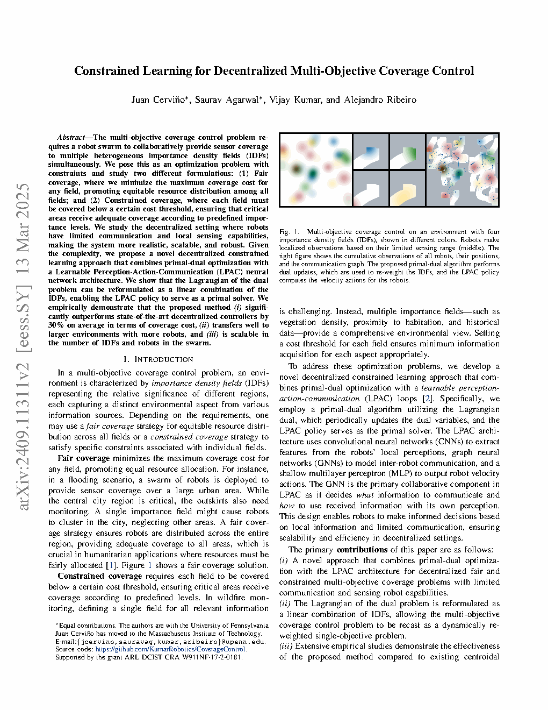
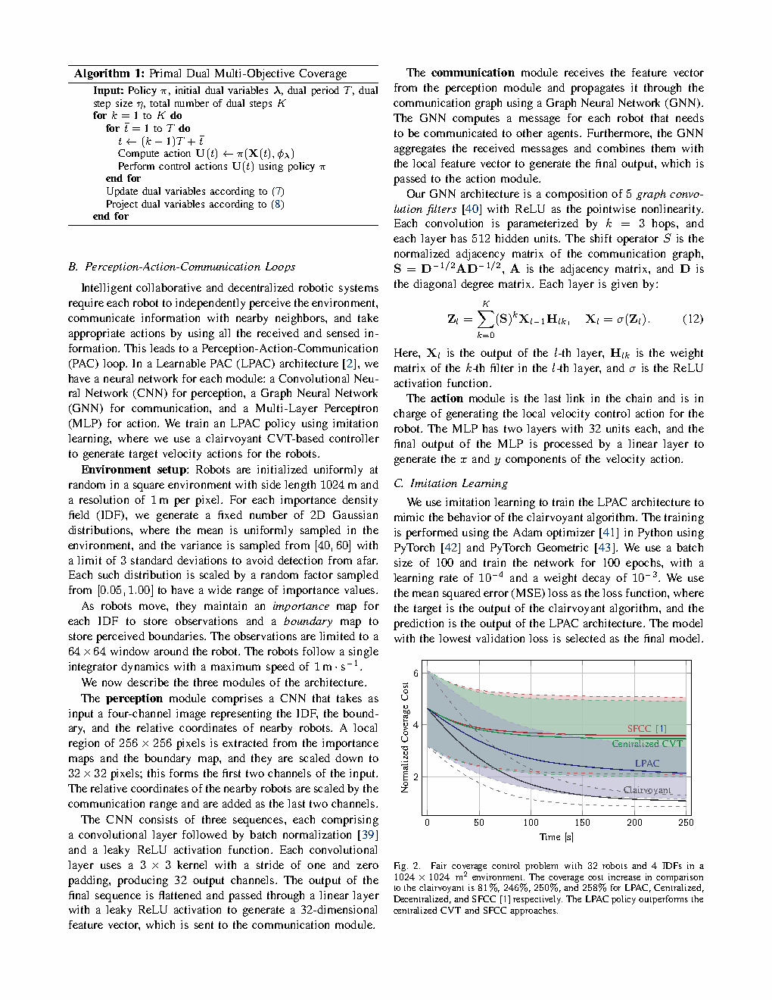
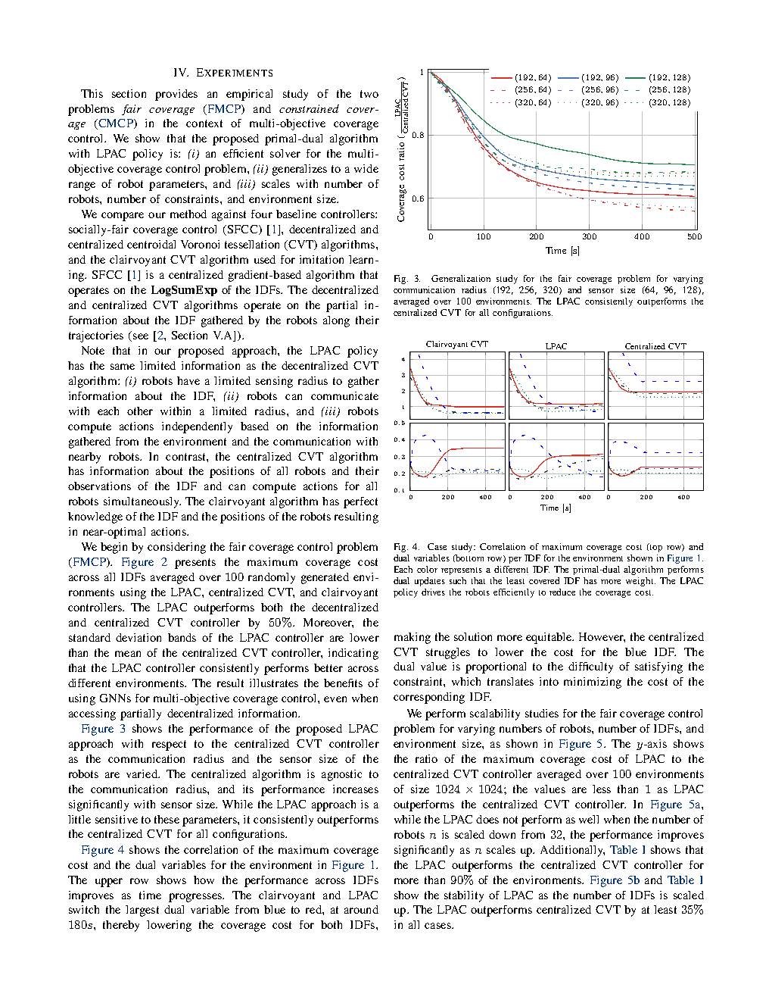
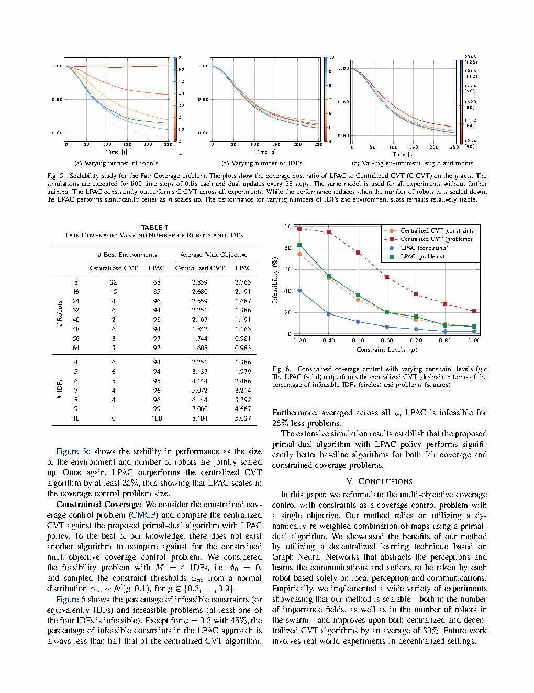

Fig. 3泛化性：覆盖代价比 LPAC/CVT 随通信半径和传感器尺寸变化来源：论文 Fig. 3

图表解读
在所有 9 种参数组合下，LPAC/CVT 比率始终 < 1。在通信/感知能力越弱时优势越大——信息最受限时优势最强。LPAC 有效利用了稀疏信息。
| 标题 | Constrained Learning for Decentralized Multi-Objective Coverage Control |
| 作者 | Juan Cervino*, Saurav Agarwal* (共同一作), Vijay Kumar, Alejandro Ribeiro |
| 单位 | University of Pennsylvania, GRASP Laboratory / ESE Department。Juan Cervino 已加入 MIT。 |
| 发表 | IEEE Transactions on Robotics (T-RO), 2025, arXiv:2411.19042 |
| DOI / 链接 | arXiv: 2411.19042 | 代码: github.com/KumarRobotics/CoverageControl |
| TL;DR | 通过 Lagrangian 对偶将多目标覆盖控制重新表述为动态重加权的单目标问题。结合原始-对偶优化与LPAC 神经架构（CNN+GNN+MLP）。在公平覆盖和约束覆盖两种设定下，平均超越集中式 CVT 约30%，并具备强大的可扩展性和零样本迁移能力。 |
flowchart TB
subgraph DUAL["Dual Layer (Slow: every T steps)"]
LAMBDA["Dual variables lambda"]
REWEIGHT["Reweight IDFs"]
UPDATE["lambda_tilde = [lambda_k + eta*s(k)]_plus"]
PROJ["Project to simplex (FMCP)"]
end
subgraph PRIMAL["Primal Layer (Fast: every step)"]
CNN["CNN Perception"]
GNN["GNN Communication"]
MLP["MLP Action"]
end
subgraph ENV["Environment"]
SENSOR["Local obs 64x64"]
ROBOT["Robot dynamics"]
COST["Coverage costs J_m"]
end
LAMBDA --> REWEIGHT --> CNN --> GNN --> MLP --> ROBOT
ROBOT --> SENSOR --> CNN
SENSOR --> COST --> UPDATE --> LAMBDA
PROJ --> LAMBDA
classDef dual fill:#f0ebfd,stroke:#8b5cf6,stroke-width:2px
classDef primal fill:#e8f0fe,stroke:#3b82f6,stroke-width:2px
classDef env fill:#e6f7ee,stroke:#10b981,stroke-width:2px
class LAMBDA,REWEIGHT,UPDATE,PROJ dual
class CNN,GNN,MLP primal
class SENSOR,ROBOT,COST env
flowchart LR
IDF["IDF 256x256"] --> C1["Conv 3x3/32ch"] --> C2["Conv 3x3/32ch"] --> C3["Conv 3x3/32ch"] --> FLAT["Flatten+Linear 32d"]
BOUND["Boundary map"] --> C1
RELPOS["Neighbor coords"] --> C1
FLAT --> GNN["5-layer GNN K=3, 512h"] --> GAGG["Aggregate"]
GAGG --> M1["FC 32"] --> M2["FC 32"] --> OUT["Linear -> vx,vy"]
classDef in fill:#fef7ed,stroke:#f59e0b,stroke-width:2px
classDef cnn fill:#e8f0fe,stroke:#3b82f6,stroke-width:2px
classDef gnn fill:#f0ebfd,stroke:#8b5cf6,stroke-width:2px
classDef mlp fill:#e6f7ee,stroke:#10b981,stroke-width:2px
class IDF,BOUND,RELPOS in
class C1,C2,C3,FLAT cnn
class GNN,GAGG gnn
class M1,M2,OUT mlp
flowchart TD
INIT["Init lambda_0, T, eta"] --> LOOP["For k=1..K"]
LOOP --> PRIM["Run policy pi for T steps with lambda_k"]
PRIM --> COLLECT["Collect J_m(X) costs"]
COLLECT --> SLACK["Compute slackness s(k)"]
SLACK --> UPDATE_D["lambda = [lambda + eta*s]_plus"]
UPDATE_D --> PROJ_D["Project if FMCP"]
PROJ_D --> LOOP
classDef fill:#e8f0fe,stroke:#3b82f6,stroke-width:2px
class INIT,LOOP,PRIM,COLLECT,SLACK,UPDATE_D,PROJ_D fill
| 类别 | 内容 | 维度 |
|---|---|---|
| 输入 | M 个 IDF，每个为 1024x1024 的 2D 高斯混合网格。机器人观测 64x64 局部窗口。 | M x 1024x1024 像素 |
| 输出 | 每个机器人的 2D 速度指令，最大速度 1 m/s | N x 2 |
| 目标 | FMCP：最小化 max J_m；CMCP：最小化 J_0 且满足 J_m <= alpha_m | 标量代价 |
去中心化多机器人覆盖控制，具有有限感知（0.39% 局部视野）和通信（192-320m 半径）能力。N 个具有单积分器动力学的机器人必须协同覆盖 M 个异构 IDF。两种变体：公平覆盖（所有 IDF 同等重要——例如洪水监测中城区与郊区同等对待）和约束覆盖（主目标 + 每 IDF 阈值——例如野火监测：植被密度为主要目标，温度/湿度必须满足最低要求）。
| 先前方法 | 核心思想 | 为何在多 IDF 上失败 |
|---|---|---|
| CVT / Lloyd Algorithm | Voronoi 划分 -> 计算质心 -> 移动机器人 -> 迭代 | 仅适用于单 IDF。没有自然的多 IDF 组合规则。集中式版本需要全局信息。 |
| SFCC (Malencia et al. 2023) | LogSumExp 松弛 min-max；集中式梯度控制 | 需要集中式架构。LogSumExp 误差随 M 增大。覆盖代价比 LPAC 高 258%。 |
| 去中心化 CVT | 每个机器人在局部 IDF 观测上独立运行 CVT | 信息严重不完整——在公平覆盖实验中比 LPAC 差 250%。 |
原始-对偶优化 + LPAC 神经策略，采用双时间尺度框架。Lagrangian 对偶将有约束多目标转化为无约束 min-max；对偶问题等价于线性组合 IDF 上的单目标覆盖（Proposition 1）。LPAC 作为原始求解器，通过模仿学习从全知 CVT 专家训练（MSE 损失，Adam，lr=1e-4，batch=100，100 epochs）。对偶变量根据约束松弛度周期性更新。
| 参数 | 数值 | 含义 |
|---|---|---|
| 环境 | 1024x1024 m^2, 1 m/px | 方形网格世界 |
| 机器人数量 N | 8-64 (默认 32) | 稀疏覆盖场景 |
| 通信半径 | 192-320 m | 边长的 18.75-31.25% |
| 传感器窗口 | 64x64 像素 | 约总面积的 0.39% |
| GNN 架构 | 5 层, K=3 跳, 512h | 可达 15 跳感受野 |
| 训练 | batch=100, 100 epochs, lr=1e-4 | 模仿学习, MSE 损失, Adam |
直觉理解：Lagrangian 乘子 lambda_m 是每个 IDF 的"影子价格"。当某个 IDF 覆盖不足（代价高）时，其价格上涨 -> 优化分配更多资源 -> 代价趋于均衡。这种市场机制无需手动调整权重即可实现自适应多目标平衡。
证明仅用到积分的线性性：
$$ \sum_{m=1}^M \lambda_m J_m(X) = \sum_m \lambda_m \int \text{dist}(q) \phi_m(q) dq = \int \text{dist}(q) (\sum_m \lambda_m \phi_m(q)) dq = J_{\phi_\lambda}(X) $$这一恒等式将 M 个独立的覆盖问题转化为线性组合 IDF 上的单个问题。策略只需知道如何覆盖任意单一 IDF；对偶层通过动态重加权处理多目标权衡。

将截图保存为figures/fig1.png展示：4 个异构 IDF（不同颜色）、机器人局部观测、以及带有通信图叠加的最终覆盖。IDF 峰值位于不同位置，构成了多目标冲突。通信图稀疏——仅邻近机器人交换消息。

将截图保存为figures/fig2.pngLPAC: 约 1.8 代价（比全知方案高 81%）。集中式 CVT: 约 3.5（高 246%）。去中心化 CVT: 约 3.6（高 250%）。SFCC: 约 3.7（高 258%）。LPAC 的标准差区间低于集中式 CVT 均值——LPAC 的最差情况优于 CVT 的平均表现。
在所有 9 种参数组合下，LPAC/CVT 比率始终 < 1。在通信/感知能力越弱时优势越大——信息最受限时优势最强。LPAC 有效利用了稀疏信息。

将截图保存为figures/fig4.png全知方案和 LPAC 在 t=180s 时将主导对偶变量从蓝色切换到红色——自适应优先级重分配。集中式 CVT 将所有对偶权重保持在 0.25 附近——无法区分覆盖紧急程度。

LPAC/CVT 比率从约 1.03（8 机器人）下降到约 0.61（64 机器人）。在 IDF 数量 4-10 和环境尺寸变化范围内保持 35%+ 的稳定提升。机器人越多 = LPAC 优势越大。

将截图保存为figures/fig6.png在所有 mu 值下，LPAC 的不可行率显著低于 CVT。跨 mu 平均，LPAC 不可行问题减少 26%。在野火监测场景中，这意味着任何指标被监测不足的风险降低 26%。
| 问题 | 难度 | 严重性 |
|---|---|---|
| 对偶步长 eta | 过大 -> 振荡；过小 -> 缓慢。无系统性调参方法。 | **** |
| 图稀疏性 | 8 机器人可能使通信图断开 -> LPAC 性能退化。 | **** |
| IDF 重叠 | IDF 峰值共位 -> 公平覆盖退化为单 IDF。 | *** |
| 分布偏移 | 极端 lambda 可能使加权 IDF 超出 LPAC 训练分布。 | *** |
| 参考文献 | 重要性 |
|---|---|
| Agarwal et al. (2024) -- LPAC. arXiv:2401.04855 | 原始 LPAC -- CNN+GNN+MLP 设计和单目标训练。 |
| Chamon & Ribeiro (2020) -- PAC Constrained Learning. NeurIPS | 理论基础：非凸损失下对偶间隙是 PAC 可控的。 |
| Malencia et al. (2023) -- Socially Fair Coverage. ICRA | 直接基线——集中式公平覆盖的局限性。 |
| Cortes et al. (2005) -- Distributed Coverage. ESAIM: COCV | 基础性去中心化覆盖——基于 Voronoi 的分布式 Lloyd。 |